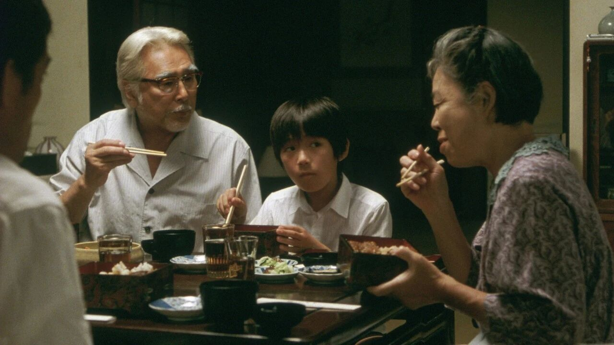
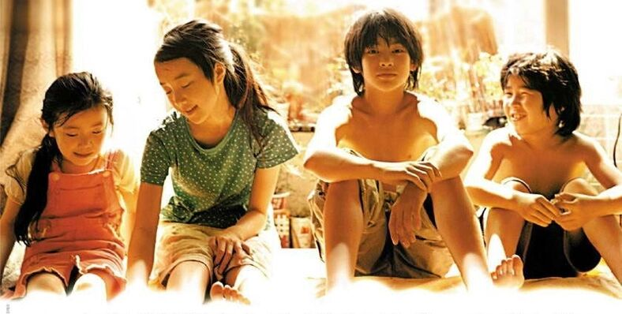

读完阎云翔的《新家庭主义兴衰：中国私人生活的重组，2000–2025》以后，我整理了书中的几十处划线，发现其中相当一部分都在回答同一个问题：家庭为什么成为国家与市场之间近乎唯一的安全网？这背后经历了怎样的过程？
这个问题让我不断想起过去几次回乡过年的场景，以及最近几年和父母打电话时反复出现的话题。父亲依旧会谈起结婚，提醒我这是一项迟迟没有完成的人生任务；母亲在电话里相对温和而无奈地劝说订婚。催婚的话题往往以不快或争吵结尾。后来，我开始减少打电话的次数，对微信里的催婚话语也常常已读不回。
ta们常念叨，还要为弟弟未来买房攒一点钱，所以再干几年就轻松了、放心了。ta们默认这是自己分内的职责，而不是弟弟需要独自完成的人生任务。过去，我更多从父权制和性别分工理解这些事情。
但阎云翔所写的“新家庭主义”，让我看到另一层结构：为什么今天的家庭明明越来越强调个人幸福，却仍然要求成员紧密捆绑？为什么父母不再要求孩子为抽象的家族利益牺牲，却可能以“为了你好”的方式，更深入地参与孩子的人生？
我当然不可能指望从书中找到解决自己家庭问题的办法，但它能把很多零散的经验组织到一起，让我更深入地理解，父母与我之间的观念差异的背后根源，这也会让我觉得畅快许多。我逐渐意识到，家庭越是努力托举个人，个人越难获得完整的自主，这并不只是某一对父母或者某一个家庭的问题。
家庭不只是旧传统的残余
二十多岁时，我曾把离开理解为一种个体化。
离开家乡，去更大的城市，接受更多教育，建立自己的职业，依靠收入获得选择权，也在一次次冲突中学习如何向父母划出边界。一个人似乎只有走得足够远，才可能知道自己喜欢什么，又想过怎样的生活。
可是，离开并不意味着家庭从此消失。生病时，家庭可能仍然是最可靠的照护来源；遭遇失业和经济困境时，父母的住所与积蓄可能成为最后的退路；结婚、生育和买房，更难完全绕开家庭资源。即使我们不再依靠父母作出生活决策，也仍然会被ta们的期待、担忧和失望所影响。
以前，我会把这些现象理解为传统家庭观念仍未退出。但《新家庭主义兴衰》提醒我，今天的家庭之所以重要，并不只是因为传统太顽固，也因为现代社会以新的方式制造了家庭依赖。
传统家庭主义以祖先、家族和血脉延续为中心，个人需要为家庭整体利益让步。新家庭主义却把重心转向子女：父母努力工作的意义，是让孩子过得更好；祖辈积累的财富和时间，也不断流向子孙。家庭的目标从光宗耀祖，变成了培养一个幸福、成功的孩子。
这样看起来，家庭似乎开始服务于个体幸福。
只是当住房、教育、就业、育儿和养老的风险都由家庭承担时，追求个人幸福也变成了一场需要全家参与的项目。一个人越想在竞争中获得更好的生活，可能越需要家庭集中资源来托举自己。
我们变得越来越独立，也越来越离不开家庭。
离开之后，人可以去哪里
书中关于“重新嵌入”的讨论，让我产生了新的理解。所谓重新嵌入，是指一个人离开原来的家庭、单位或社区之后，能否重新进入别的支持关系，重新获得归属感和安全感。
在西欧社会的个体化过程中，人从家庭、社区和宗教组织中脱离以后，还可能通过社团、工会、非政府组织、新型亲密关系和公共福利，重新获得归属感与安全感。也就是说，一个人离开一种共同体，还有机会进入另一种共同体。
我们生活的社会，情况却很不一样。个体从农村集体和城市单位中脱离，承担了更多就业、住房、教育与养老责任，却缺少新的社会组织和公共支持来承接。在减少了部分福利供给的情况下，市场又将越来越多的生活领域商品化，而个人能够重新建立社会联系与信任的公共空间仍然有限。
脱离原有集体的人，最终发现自己孤立地站在国家与市场之间，于是家庭成了最可靠、有时甚至是唯一的保护机制。这也是为什么我们社会的个体化没有使家庭变得无足轻重，反而进一步加固了家庭。
我想，这也一定程度上解释了为什么，我们会被影视作品里自由而肆意的生活方式打动。那样的主角可以离开家乡，换工作、换城市、换伴侣，在关系和职业里重新开始。可这种自由在现实中很难照搬。个体或许获得了选择生活方式的自由，却没有获得与这种自由相匹配的社会保障。
书中将这概括为“自由的私人化”。恋爱、婚姻、消费、养育和情感表达，成为个人探索自由的主要场域；但这种自由更多被限制在私人生活中，并没有自然转化为公共参与、社会权利或者新的互助组织。自由被安置在家庭与生活方式里，风险也同时被家庭化了。相似的观点在我之前看的与福利制度有关的比较研究书籍中也有提及。
我们如此重视家庭，不一定只是因为中国人更加眷恋亲情，也可能是因为家庭之外缺少足够坚实的支持。如果一个人失去家庭，他/她可以去哪里？当这个问题很难回答时，家庭自然拥有了远超亲密关系本身的力量。

托举的代价，与爱的复杂性
书中最让我印象深刻的案例，是“父母包办离婚”。一些追求爱情、自由和个性的年轻人，在婚姻破裂时，却将协商与决定交给双方父母。父母提供了住房、金钱和日常支持，也因此获得了介入子女婚姻的资格。
这和传统的包办婚姻不完全相同。父母不是为了抽象的家族利益才进行干预的，ta们是因为相信自己更了解什么对孩子好。ta们担心孩子受到伤害，担心孩子无法处理财产、住房与未来生活，于是以保护和幸福之名，重新进入孩子的人生。年轻人也并非完全被动，ta们需要父母的资源，接受父母提供的安全感，有时也会主动让渡部分自主权。
这让我想到自己曾经努力学习的“课题分离”。它的意思很简单：父母对婚育的焦虑是ta们的课题，我是否结婚则是我的课题。道理非常清楚，可道理常常不足以使情绪波澜不惊，我仍然会因为和父母打的一通电话而烦躁不安。家庭不是课堂里的模型，关系里还有共同生活的记忆、经济往来、亏欠感与爱。
每一份帮助里，都混着爱、焦虑、权力，以及某种尚未明说的未来回报。
接受的资源越多，越难拒绝资源附带的期待。但这也不意味着父母的爱是虚假的。父母同样生活在风险之中，担心孩子找不到工作、买不起房、无法拥有稳定生活，也担心自己没有履行“好父母”的责任。ta们所能想到的办法，就是积累更多财富，提供更多帮助，提前排除更多不确定性。
家人之爱并没有消失，却被要求承担住房、教育、就业、育儿、养老和阶层流动等太多功能。家庭逐渐像一家风险管理企业，亲密关系则成为维持这家企业运转的动力。当所有付出都被期待获得回报，义务便可能慢慢变成债务。
理解这种结构，并不等于我要接受所有干预。理解，也并不是和解。
“家庭韧性”的背后
新家庭主义将资源不断推向子辈，但这些资源不会凭空出现。它们来自父母节制自己的消费，来自祖辈改变居住地、承担育儿，也来自家庭中大量没有被计算的女性劳动。
我写母亲时，曾经试图理解她为什么在家庭中缺少话语权。她为了陪读和照顾家庭，中断或调整工作；父亲持续获得工资，母亲的劳动却很少被换算成明确的经济价值。父亲的付出可以通过收入被看见，母亲的家务、照护和情感劳动，却被称为“应该做的事”。
《新家庭主义兴衰》也强调了这一点，这并不只是我们家的性别分工。整个新家庭主义的运行，都严重依赖女性的时间与劳动。父母托举孩子，祖辈帮助父母，而在这些代际合作中，母亲和祖母往往是实际承担照护的人。
一个孩子能够获得细致的教育安排、稳定的生活环境和持续的情感支持，背后通常有人推迟了自己的职业，放弃了休息，承担着大量琐碎、重复而无法计价的工作。因此，家庭越是被称赞坚韧，就越需要追问：是谁在维持这种坚韧？
家庭资源持续向下流动，也可能系统性地忽视老年人的需要。许多老人把自己的积蓄、住房和劳动投入子女与孙辈，又尽可能长时间地自我照顾。ta们甚至会因为年老体弱、无法继续帮助子女而产生愧疚。
传统孝道要求晚辈尊敬、服从和赡养长辈。新家庭主义却逐渐以“亲情”取代“孝道”：子女不一定服从父母，却会以情感、陪伴和协商的方式维持关系。这当然是一种进步，照护不再必须建立在权威和等级之上，但它也带来新的不确定性。
孝道至少是一套清晰的义务规范，亲情却需要在长期相处中积累。一个人过去是否付出、关系是否亲密、家庭资源如何分配，都可能影响晚年的照护，这像一本漫长的亲情资产负债表。
如果年轻女性不再愿意重复母辈的牺牲，如果老年人希望拥有自己的退休生活，如果每个人都更加在乎自己的时间、劳动与感受，这套依靠无限付出运行的家庭模式还能维持多久？
家庭的温暖是真实的，家庭劳动和资源分配的不平等也是真实的。我们不能因为看见前者，就假装后者不存在。
新家庭主义既是解决方案，也是问题的制造者。家庭替制度填补了大量空缺，展现出令人惊叹的韧性；但家庭承担的功能越多，亲密关系越容易变成责任，责任又越容易变成债务。
家庭不会迅速退出我们的生活。住房、教育、就业与养老制度仍然使它成为最现实的兜底机制。但如果家庭不再能够无限托举，如果年轻人也不愿继续复制这种牺牲，我们还可以去哪里？家庭之外，又能否生长出新的连接与生活方式？
这是这本书探讨的另一个问题。下一篇我们接着聊。